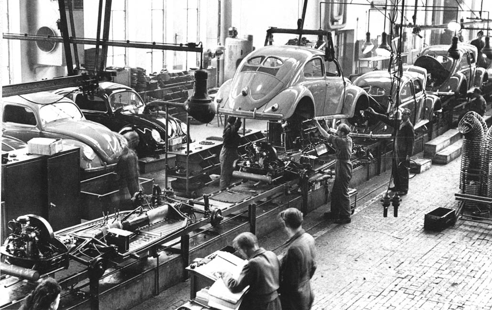

"A bad system will beat a good person every time" - Edwards Deming
This post is based on a tech talk I gave at eBay in early 2018. eBay had gone through a company-wide transformation to agile processes (where before this had been team-specific) and the main points I wanted to make where that it was important to make the hidden things the consumed people's time visible, explicit, and properly prioritized, if we want to improve throughput or flow. Note that this is not the same flow as Csíkszentmihályi's "being in the zone", but being in the zone can improve throughput.
It was a fun talk not least because of the inclusion of the "I Love Lucy" video. The original talk material was mostly bullet points; I have changed it to have a somewhat better narrative structure but haven't changed it too much.
We have too much Work in Progress (WIP)!
We take on too much work in progress (WIP) for many reasons, including:
- It's hard to say no. We want to please people and be team players, and we defer to authority. So we say yes to random requests and our sprints are disrupted by unplanned work.
- We frequently underestimate the effort involved in tasks, and we often have unclear priorities. So we end up having to scramble to meet deadlines because we have been working on the wrong things or gave bad dates that were communicated up and/or out and are now hard deadlines.
- New things are often more fun to start than existing things are to finish, so we get to 90% done and then don't finish properly.
But too much WIP comes with a lot of associated problems:
- delayed delivery of important features
- throwaway work due to short-term hacks or unclear requirements that were worked on anyway
- neglected work adding to technical debt and lower quality
- increased costs
- poor morale and burnout of personnel
- context switching and multitasking, causing lack of flow (throughput)
So how can we improve flow? That is the topic for this post. You can probably guess that reducing WIP is key, but that's not all. To understand the problem better it is worth going on a short historical tour of operational optimization in the manufacturing world.
Henry Ford's Assembly Line (1908)
Henry Ford thought about the problem or improving throughput while lowering cost. He realized that if the primary objective of operations is to optimize throughput, then we want to produce at a constant (high) rate, and so he invented the assembly line, which is great for a large volume of homogenous parts.

The problem with the assembly line is that work in progress cannot pile up or the entire line can come to a halt.
Or worse! If the line isn't halted, quality suffers badly.
So it is critical to determine when not to produce, and to abolish local efficiencies that can overload downstream stations.
Taichii Ohno, Toyota and the invention of Kanban (1948)
While Ford's assembly line was great for a limited variety of mass-produced items, in post-war Japan there was a demand for a more varied set of cars. Taichii Ohno of Toyota realized he could control the amount of work in progress by using containers of parts of fixed capacity. Upstream workers were not allowed to produce more than that many parts. This meant that inventory did not build up but that there was still a buffer that downstream workers could pull from, and that buffer was refilled "just in time" (so the system is often called JIT).
Every station had an "Andon cord" which could be used to signal an issue at that station or with the quality of parts arriving from upstream.
Furthermore, by reducing the size of the containers/buffers slowly, new issues would reveal themselves, and the lessons learned could be used to iterate and improve the system, allowing continuous improvement.

This system was still sensitive to externalities like market demand: because it reduced idle inventory a sudden surge in orders could mean delays. But it became the state of the art post World War II and was studied and emulated world-wide.
Goldratt's Theory of Constraints (1984)
Eliyahu Goldratt was an Israeli academic who joined a software company, Creative Output, that made one of the first programs to do finite capacity scheduling for manufacturing. In the course of his work he realized a better way to limit WIP is to focus on time. He noticed that every system has one bottleneck tighter than all the others, which limits the throughput of the system as a whole, and that the only way to improve the overall throughput of the system is to improve the throughput at that constraint.
Ironically his "Theory of Constraints" or TOC, published in the book The Goal, was not well-received at the company and he was eventually fired along with a number of his collaborators. But The Goal has since been recognized as one of the 25 Most Influential Business Management Books by Time Magazine.
An easy way to understand the concept of the constraint, and how the optimal throughput of the overall system matches the optimal throughput of the system, is to think of a busy 3-lane highway with a partial lane closure. At the point where the lane restriction starts, there is typically a traffic jam caused by cars merging, and the remaining two open lanes end up underutilized because cars enter the area slower. The end result may be less efficient than a highway that is 2-lanes throughout (it certainly can't be more efficient).
An important lesson from this is that improvements in efficiency that are not at the limiting constraint can actually make things worse! Making the 3-lane highway 4-lanes while still closing down to just 2 can make the bottleneck even more severe and slow. So optimizing parts of the system without fixing the core constraint may give an illusion of improvement but that's all it is; if it is upstream of the bottleneck it will make things worse at the bottleneck, while if it is downstream it is simply going to be wasted excess capacity sitting idle.
Goldratt came up with the analogy of the drum-buffer-rope to help explain his theory:
- the drum is the processing rate of the bottleneck that determines the pace at which the entire system should work
- the rope is a signal that “pulls” a new item of work into the pipe only when an item is processed by the bottleneck
- as every unit of lost time at the bottleneck is lost time for the entire system, the bottleneck should never go idle, so there needs to be a buffer of work just upstream ready to be processed

Goldratt suggested 5 steps to optimizing a system based on TOC:
- identify the constraint
- optimize the use of the constraint (implement the "buffer")
- subordinate all non-constraints to the constraint (add the "rope")
- elevate the constraint (i.e. add capacity or make changes to increase its capacity, to speed up the "drum")
- rinse and repeat, because the constraint is now likely somewhere else
But This is Manufacturing, What about Knowledge Work?...
All of the above theories come from manufacturing, where tasks tend to be highly repetitive and take more-or-less fixed amounts of time. But we can still think of knowledge work as an assembly line!

The "Efficiency Paradox"
A company where everyone is busy working is terribly inefficient. The only way that’s possible is if everyone is optimizing their own productivity, at the expense of the bottleneck’s productivity!
For the bottleneck to be fully utilized, all other parts must have excess capacity, which directly contradicts the conventional wisdom of “everyone stay busy,” (using all available capacity). Instead, no team should take on more work than their bottleneck can process, and one of the tasks of management is to determine the capacity of the bottleneck, fill it, and then allow no more projects to begin until one is completed.
And then to fix the bottleneck :-)
As for Individual Contributors: if you don't have enough work to keep you busy, first try to help those who are overloaded, rather than coming up with new projects!
So how do you identify the bottleneck? In many cases, if you have a Kanban board it is fairly obvious, as work is piling up immediately upstream. If you keep track of agile metrics, the constraint will be the step with the longest average cycle time. In the case that it is not so obvious, you can hypothesize what it might be (by looking for scarce resources or asking people), and try adding capacity at that point. If overall throughput improves, it was the constraint; if the added capacity is idle, the constraint is upstream, else the constraint is downstream (and throughput may be worse!)
Note that constraints are often just business policies! You may have policies that block the completion of work items at some stage and that could be the bottleneck.
I should note here that if you have simple processes and largely interchangeable workers, then you may not need to worry about much of this optimization; it is mostly useful in complex situations with multiple roles and stages of work. I have worked in team like the former where optimization would have not changed anything, but also in teams where there are multiple stages of review blocked on the availability of various (non-interchangeable) people, where the places to focus attention are not always obvious.
Identifying WIP Limits at Non-Constraint Stages
If you're doing Kanban, you may want WIP limits in each of your swim lanes. It's usually pretty obvious what the WIP limit is at the constraint as it is the throughput of the whole system. What about determining WIP limits at other points? You can do this empirically for upstream swim lanes:
- strictly enforce WIP limits and start reducing them
- as WIP drops, the least constrained resources will start to run out of things to do, and will start sending less work to the constraint
- the constraint throughput will stay the same or possibly even increase, as will overall throughput
- eventually even the constraint will start having idle capacity and you will have gone too far; the sweet spot is just above this point (and then you may want to add a buffer).
Apart from reducing WIP coming from upstream and adding the buffer, there are other ways to optimize the constraint:
- improve quality checks or other requirements on upstream work to reduce wasted time at the constraint
- offload work from the constraint to others, if possible
- add capacity if that is an option and other avenues have been exhausted.
It helps to identify sources of inefficiency at the constraint and improve them. For example:
- too much partially completed or incomplete but neglected work (WIP)
- unplanned work/randomizations
- unnecessary work
- unknown dependencies(software/hardware/people/resources/activities)
- unclear and competing priorities
In order to understand what these are it is critical to make the work visible! You can't manage what you can't see. You should track anything that takes meaningful time, and even track small things that only one person knows how to do, or that impact other teams (unknown dependencies). Classifying these into different categories (e.g. bug fixes, feature work, deployments, meetings) and color-coding them is helpful.
Spend some time identifying pain points like too many meetings, conflicting priorities, interruptions, etc, and track the top ones - knowing how much time these suck up will help to make a case for reducing them or bringing them under control.
You can use horizontal swim lanes with WIP limits to limit different types of work if that is helpful.

Note that cycle time, lead time and throughput are all trailing indicators of problems but WIP is a leading indicator. Think of getting on a busy highway: you can tell when getting on if it is congested (high WIP) that it will take a long time to get to work (cycle time).
The Problem of Dependencies
Dependencies between teams can cause delays as coordination takes time and effort, and people may not be available when needed. Dependencies in code can cause delays or quality issues as changes in one place can break things in other places.
Every dependency you can eliminate, whether between people or systems, improves the chance you can deliver on time.
Often by the time you realize you have a dependency you are already in trouble, so it makes sense to identify dependencies as early as possible and try to reduce them.
If you can organize your teams around products rather than silos (whether component-based or discipline-based) that will help a lot. Otherwise implement processes to grease the wheels between teams with dependencies, and make sure the dependencies are visible across the teams. Use color-coding or dedicated swim lanes in your Kanban or Scrum boards to highlight issues with cross-team dependencies.
For dependencies in code, these can be identified with tools like dependency diagram generators. You can use the count of items dependencies to get approximation of risk. Refactor when possible to reduce dependencies.
Dealing with Unplanned Work
Unplanned work eats schedules and milestones for breakfast, by taking time away from planned work causing delays and decreased quality. Track planned vs. unplanned work over time and then allocate some WIP count to unplanned work (and/or capacity if time-boxing with Scrum), so that it becomes semi-planned. It may be helpful to have a designated person on a rotation to deal with unplanned work.
Dealing with Interruptions
Context-switching is expensive, and interruptions really break people's concentration. Have your individual contributors track interruptions over a sprint and get a sense of their cost, and their sources. Some tips for reducing interruptions and improving focus include:
- consider using the Pomodoro technique
- establish ground rules with your team and partners about when they can interrupt
- plan your work, schedule it in Outlook, work your plan
- aim for focused work in the morning and meetings etc. in the afternoon (see When by Daniel Pink)
The Importance of Prioritization
Without clear priorities, we often try to do things in parallel resulting in high WIP. Only one thing can be the most important thing, so it is important to be clear about what that is. With a properly prioritized backlog there should be much less temptation to take on multiple tasks.
To avoid arguments, it can be helpful to have a clear policy for determining priority. A useful one to use is Cost of Delay which combines both urgency and business value, but it is not always the easiest to measure. You can find a tutorial here.
Neglected Work and Technical Debt
We often start some work but never quite complete it. For example we may have varying level of test coverage depending on who did the work and how much time pressure was applied. We may have low priority bugs that fester for a long time. Eventually some of these neglected issues become more serious and costly to deal with, and now are harder to complete because the context and working memory is lost.
For incomplete features, it may well be better to kill/remove the code than to leave around in partially completed state. Avoid the sunk cost fallacy - only consider the incremental cost of completion to the expected return, not the already expended effort which is a non-recoverable cost.
To help avoid getting in this situation ion the first place, set SLAs on work in progress, and flag items that haven't moved and have exceeded the SLA. See if the flagged items can be killed or moved back to the backlog, or raise the priority and get it done.